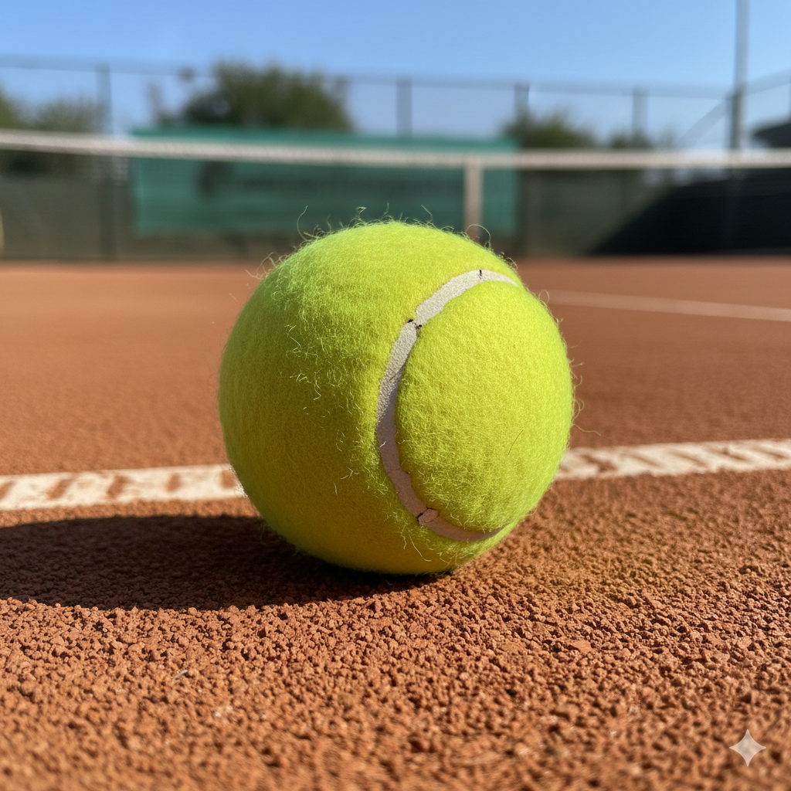

Från grusbanor i Paris till gräset i Wimbledon.

Tennis har sina rötter i 1100-talets Frankrike, där det ursprungligen spelades av munkar. Då användes handflatan istället för racket, och sporten kallades "jeu de paume". Det var dock i England på 1870-talet som den moderna "Lawn Tennis" föddes, med det första Wimbledonmästerskapet 1877.
Sverige har en av sportens mest framgångsrika historier. Allt började på 1970-talet med Björn Borg. Med sitt pannband, sina långa slag från baslinjen och sin iskalla mentala styrka vann han fem raka Wimbledon-titlar och sex Franska Öppna. Borg blev inte bara en sportstjärna, utan en global popikon som förändrade hur tennis spelades över hela världen.
Borgs framgångar startade det som kom att kallas "Det svenska tennisundret". Under 1980- och 90-talet dominerade Sverige totalt med världsettor som Mats Wilander (7 Grand Slam-titlar) och Stefan Edberg (6 Grand Slam-titlar). Under en period hade Sverige fler spelare bland de 100 bästa i världen än nästan något annat land.
Sverige har också vunnit Davis Cup (lag-VM i tennis) hela sju gånger, vilket placerar oss bland de mest framgångsrika länderna genom tiderna. Även om konkurrensen har hårdnat idag, lever det svenska arvet kvar i form av legendariska tränare och en passion för sporten som aldrig svalnar.
Nedan listas spelarna med flest titlar totalt. Skrolla i listan för att se alla vinnare.
| Ranking | Spelare | Totalt antal titlar |
|---|---|---|
| 1 | Novak Djokovic | 24 |
| 2 | Rafael Nadal | 22 |
| 3 | Roger Federer | 20 |
| 4 | Pete Sampras | 14 |
| 5 | Björn Borg | 11 |
| 6 | Ivan Lendl | 8 |
| 7 | Andre Agassi | 8 |
| 8 | Mats Wilander | 7 |
| 9 | Stefan Edberg | 6 |
| 10 | Boris Becker | 6 |
| ... | Carlos Alcaraz | 4 |
| ... | Jannik Sinner | 3 |
| ... | Stan Wawrinka | 3 |
| ... | Dominic Thiem | 1 |
| ... | Daniil Medvedev | 1 |